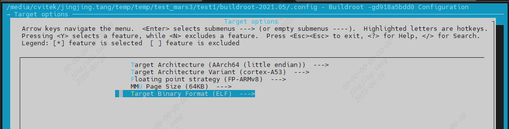

5. Root File System(rootfs)¶
5.1. Root File SystemIntroduction¶
the corresponding contentYesLinuxoperationSystemthe corresponding content，File SystemYesUserthe corresponding contentoperationSystemthe corresponding contentmainlytool。the corresponding contentuseLinuxthe corresponding content，the corresponding contentFile Systemthe corresponding content。
Root File Systemthe corresponding contentYesthe corresponding content ”/” the corresponding content “the corresponding content(root)”the corresponding contentContentsthe corresponding content，the corresponding content(uImage)startthe corresponding contentDevice(ex:eMMC)the corresponding contentContentsthe corresponding content，Root File Systemthe corresponding content(DRAM)the corresponding contentmemory(FLASH)the corresponding content，the corresponding contentYesthe corresponding contentnetworkthe corresponding contentFile System(NFS)。the corresponding contentApplicationthe corresponding contentFile Systemthe corresponding content，the corresponding contentRoot File SystemContentsthe corresponding contentFigure。
/ the corresponding contentContents
├── bin ## the corresponding contentFile
├── dev ## DeviceFile
├── etc ## SystemConfigurationFile(ex: startFile)
├── home ## UserContents
├── init ## the corresponding contentscript
├── kdump ## the corresponding contentContents
├── lib ## the corresponding contentcontainglibc, shared librarythe corresponding contentModule
├── mnt ## the corresponding contentFile Systemthe corresponding content
├── proc ## the corresponding contentinformationthe corresponding contentFile System
├── sbin ## SystemManagementthe corresponding contentFile
├── sys ## SystemDevicethe corresponding contentFilethe corresponding content，the corresponding contentDataData
├── usr ## the corresponding contentContentsthe corresponding contentcontainUserthe corresponding contentApplicationthe corresponding contentFile
└── var ## the corresponding contentSystemthe corresponding contentservicethe corresponding contentFile
5.2. Rootfs¶
the corresponding contentsectionYesDescriptionFile Systemthe corresponding content，the corresponding contentPaththe corresponding contentramdisk/rootfs/
5.2.1. Pre-build rootfs Architecture¶
File Systemthe corresponding contentContentsmainlythe corresponding contentType，the corresponding contentRootfs，the corresponding contentDescription:
Basic rootfs:
the corresponding contentArchproducethe corresponding contentpre-build rootfsthe corresponding content
Arch |
Libc |
Pre-build ramdisk path |
|---|---|---|
Arm |
glibc |
ramdisk/rootfs/common_arm/ |
Arm |
musl |
ramdisk/rootfs/common_musl_arm/ |
Aarch64 |
glibc |
ramdisk/rootfs/common_arm64/ |
Chip configuration rootfs:
the corresponding contentProcessorsetthe corresponding contentSetthe corresponding contentramdisk/rootfs/overlay/$CHIP
Third-party rootfs:
the corresponding contentSoftwarethe corresponding contentlibrary、utility、related filethe corresponding content
ramdisk/rootfs/public/

canusemenuconfigCommandthroughFigurethe corresponding contentmenuthe corresponding contentneedthe corresponding contentThird-party softwarethe corresponding contentRootfs


5.2.2. the corresponding contentbuildroot the corresponding contentrootfs¶
the corresponding contentsectionYesthe corresponding contentbuildrootproducerootfsandthe corresponding contentEVBthe corresponding contentRunthe corresponding content，the corresponding contentsectionDescriptionthe corresponding contentpre-build rootfs，the corresponding contentsection。
the corresponding contentCV184x v6.2.0Versionthe corresponding content，canthe corresponding contentCV184xthe corresponding contentCompilation Environment，useBuildroot the corresponding contentrootfs。
the corresponding contentbuildrootthe corresponding content，the corresponding contentCV184x buildContentsthe corresponding content，the corresponding contentswitchthe corresponding contentbuildroot-2023.11the corresponding content
https://github.com/sophgo/buildroot-2021.05.git
5.2.2.1. the corresponding content¶
$ source build/envsetup_soc.sh # Initializeenvironment
$ defconfig cv1842hp_wevb_0014a_spinor # the corresponding content，cv184xthe corresponding contentSupportedthe corresponding contentEVBthe corresponding contentConfigurationthe corresponding content $CHIP_$BOARD
$ setconfig BUILDROOT_FS=y # the corresponding contentuseBuildroot the corresponding contentrootfs
$ cp buildroot-2021.05/configs/cvitek_CV184X_musl_arm_defconfig buildroot-2021.05/.config # the corresponding contentBuildrootthe corresponding contentConfigurationthe corresponding content
$ clean_all && build_all # the corresponding content
$ clean_rootfs && pack_rootfs # the corresponding contentrootfs
5.2.2.2. Configure Buildroot in the Graphical Menu¶
$ menuconfig_buildroot
menuconfig_buildroot modifythe corresponding contentYescurrent .config，the corresponding content savedefconfig_buildroot Savethe corresponding content buildroot-2021.05/configs/cvitek_CV184X_musl_arm_defconfig，Nothe corresponding contentgenerateConfigurationthe corresponding content。

5.2.2.3. Set Arch Info & Toolchain & Packages¶
configs Contentsthe corresponding content CV184x the corresponding contentdefaultConfigurationFile cvitek_CV184X_musl_arm_defconfig。
InitializeCompilation Environmentthe corresponding content EVB the corresponding content，canthrough menuconfig_buildroot Commandthe corresponding contentConfiguration。
SetArchitecture
ARM

AARCH64
{kind=link}

Settoolthe corresponding content
GLIBC AARCH64

GLIBC ARM

MUSL ARM

MUSL AARCH64

Setneedinstallthe corresponding contentSoftwarethe corresponding content

5.2.2.4. the corresponding content /etc/init.d/Sxx the corresponding content ko automaticLoad¶
Buildroot modethe corresponding content，SDK the corresponding content br-rootfs-prepare the corresponding content overlay Content，mainlycontain：
the corresponding content
ramdisk/rootfs/overlay/${CHIP_ARCH_L}_${SDK_VER}/etc/init.dthe corresponding contentstartthe corresponding contentbuildroot-2021.05/board/cvitek/CV184X/overlay/etc/init.d。the corresponding content
${OUTPUT_DIR}/rootfs/systemthe corresponding content Buildroot overlay the corresponding content/system。the corresponding content
osdrv/interdrvthe corresponding content*.kothe corresponding contentoverlay/system/ko，the corresponding content Buildroot rootfs the corresponding contentDriverModule。
ifboard sidethe corresponding content /system/ko/loadsystemko.sh the corresponding content /system/ko/*.ko，the corresponding content ko the corresponding contentautomatic insmod，the corresponding contentCheck /etc/init.d/S99user YesNothe corresponding content rootfs，the corresponding contentverifythe corresponding contentcall loadsystemko.sh。
$ ls buildroot-2021.05/board/cvitek/CV184X/overlay/etc/init.d
$ ls buildroot-2021.05/output/target/etc/init.d
board sideVerification：
# ls -l /etc/init.d/S99user
# sh -x /etc/init.d/S99user start
# ls /system/ko
# sh -x /system/ko/loadsystemko.sh
# lsmod
the corresponding content S99user the corresponding content，Systemstartthe corresponding contentautomaticthe corresponding content loadsystemko.sh，the corresponding content /system/ko the corresponding content ko Filethe corresponding contentautomaticLoad。
5.2.2.5. BR2_TARGET_GENERIC_REMOUNT_ROOTFS_RW¶
BR2_TARGET_GENERIC_REMOUNT_ROOTFS_RW the corresponding contentControl Buildroot startthe corresponding contentYesNothe corresponding contentRoot File System remount the corresponding content rw。ConfigurationPathas follows：
$ menuconfig_buildroot
System configuration --->
[*] remount root filesystem read-write during boot
$ savedefconfig_buildroot
Verification defconfig：
$ grep BR2_TARGET_GENERIC_REMOUNT_ROOTFS_RW buildroot-2021.05/configs/cvitek_CV184X_musl_arm_defconfig
board sideVerification：
# cat /proc/cmdline
# mount | grep ' on / '
# mkdir /rootfs_rw_test
the corresponding contentClosethe corresponding contentoptionthe corresponding content rootfs the corresponding content，needthe corresponding contentCheckthe corresponding content：
/proc/cmdlineYesNothe corresponding contentrw。the corresponding content bootargs the corresponding contentrw，kernel the corresponding content rootfs。/etc/inittabYesNothe corresponding contentmount -o remount,rw /。/etc/init.dYesNothe corresponding content remount the corresponding content，For exampleS01remount_rootfs_rw。
the corresponding content /proc/cmdline the corresponding content rootwait ro the corresponding content init the corresponding content remount rw the corresponding content，Close BR2_TARGET_GENERIC_REMOUNT_ROOTFS_RW the corresponding content，rootfs the corresponding content。
5.2.2.6. producethe corresponding content ROOTFS the corresponding contentBurningthe corresponding content¶
$ pack_rootfs
Buildroot the corresponding content rootfs mainlythe corresponding content build/Makefile the corresponding content br-rootfs-prepare the corresponding content br-rootfs-pack：
menuconfig-br2:
${Q}$(MAKE) -C ${BUILDROOT_PATH} menuconfig
savedefconfig-br2:
${Q}$(MAKE) -C ${BUILDROOT_PATH} savedefconfig
# BR_OVERLAY_DIR
# BR_ROOTFS_RAWIMAGE
br-rootfs-prepare:export CROSS_COMPILE_KERNEL=$(patsubst "%",%,$(CONFIG_CROSS_COMPILE_KERNEL))
br-rootfs-prepare:export CROSS_COMPILE_SDK=$(patsubst "%",%,$(CONFIG_CROSS_COMPILE_SDK))
br-rootfs-prepare:
$(call print_target)
${Q}mkdir -p $(BR_OVERLAY_DIR)/etc/init.d
${Q}if [ -d $(RAMDISK_PATH)/rootfs/overlay/${CHIP_ARCH_L}_${SDK_VER}/etc/init.d ]; then \
cp -arf $(RAMDISK_PATH)/rootfs/overlay/${CHIP_ARCH_L}_${SDK_VER}/etc/init.d/* $(BR_OVERLAY_DIR)/etc/init.d/; \
fi
${Q}rm -f $(BR_OVERLAY_DIR)/etc/init.d/S01remount_rootfs_rw
${Q}rm -f $(BR_DIR)/output/target/etc/init.d/S01remount_rootfs_rw
# copy ko and mmf libs
$(if $(wildcard $(OUTPUT_DIR)/rootfs/system),,$(error $(OUTPUT_DIR)/rootfs/system not found - run build_osdrv/build_all before pack_rootfs))
${Q}rm -rf $(BR_OVERLAY_DIR)/system
${Q}mkdir -p $(BR_OVERLAY_DIR)/system
${Q}cp -arf $(OUTPUT_DIR)/rootfs/system/. $(BR_OVERLAY_DIR)/system/
${Q}mkdir -p $(BR_OVERLAY_DIR)/system/ko
${Q}find $(OSDRV_PATH)/interdrv -mindepth 2 -maxdepth 2 -type f -name '*.ko' -exec cp -f {} $(BR_OVERLAY_DIR)/system/ko/ \;
# strip
${Q}find $(BR_OVERLAY_DIR) -name "*.ko" -type f -printf 'striping %p\n' -exec $(CROSS_COMPILE_KERNEL)strip --strip-unneeded {} \;
${Q}find $(BR_OVERLAY_DIR) -name "*.so*" -type f -printf 'striping %p\n' -exec $(CROSS_COMPILE_KERNEL)strip --strip-all {} \;
${Q}find $(BR_OVERLAY_DIR) -executable -type f ! -name "*.sh" ! -path "*etc*" ! -path "*.ko" -printf 'striping %p\n' -exec $(CROSS_COMPILE_SDK)strip --strip-all {} 2>/dev/null \;
br-rootfs-pack:export TARGET_OUTPUT_DIR=$(BR_DIR)/output/$(BR_BOARD)
br-rootfs-pack:
$(call print_target)
${Q}if [ ! -f $(BR_DIR)/.config ]; then $(MAKE) -C $(BR_DIR) $(BR_DEFCONFIG); fi
${Q}$(MAKE) -j${NPROC} -C $(BR_DIR)
# copy rootfs to rawimg dir
ifeq (${CONFIG_ROOTFS_RW},y)
ifeq ($(STORAGE_TYPE),spinor)
$(warning spi nor flash is not support rw filesystem)
else ifeq (${STORAGE_TYPE},spinand)
${Q}cp $(BR_DIR)/output/images/rootfs.ubifs $(OUTPUT_DIR)/rawimages/
${Q}python3 $(COMMON_TOOLS_PATH)/spinand_tool/mkubiimg.py --ubionly $(FLASH_PARTITION_XML) ROOTFS $(OUTPUT_DIR)/rawimages/rootfs.ubifs $(OUTPUT_DIR)/rawimages/rootfs.spinand -b $(CONFIG_NANDFLASH_BLOCKSIZE) -p $(CONFIG_NANDFLASH_PAGESIZE)
${Q}rm $(OUTPUT_DIR)/rawimages/rootfs.ubifs
else
${Q}cp $(BR_DIR)/output/images/rootfs.ext4 $(OUTPUT_DIR)/rawimages/rootfs.$(STORAGE_TYPE)
endif
else
ifeq (${STORAGE_TYPE},spinand)
${Q}cp $(BR_DIR)/output/images/rootfs.squashfs $(OUTPUT_DIR)/rawimages/
${Q}python3 $(COMMON_TOOLS_PATH)/spinand_tool/mkubiimg.py --ubionly $(FLASH_PARTITION_XML) ROOTFS $(OUTPUT_DIR)/rawimages/rootfs.squashfs $(OUTPUT_DIR)/rawimages/rootfs.spinand -b $(CONFIG_NANDFLASH_BLOCKSIZE) -p $(CONFIG_NANDFLASH_PAGESIZE)
${Q}rm $(OUTPUT_DIR)/rawimages/rootfs.squashfs
else ifeq (${STORAGE_TYPE},sd)
${Q}cp $(BR_DIR)/output/images/rootfs.ext4 $(OUTPUT_DIR)/rawimages/rootfs.$(STORAGE_TYPE)
else
${Q}cp $(BR_DIR)/output/images/rootfs.squashfs $(OUTPUT_DIR)/rawimages/rootfs.$(STORAGE_TYPE)
endif
endif
ifneq ($(STORAGE_TYPE),sd)
$(call raw2cimg ,rootfs.$(STORAGE_TYPE))
endif
# TODO A/B boot is currently not supported when CONFIG_BUILDROOT_FS is enabled
ifeq ($(CONFIG_BUILDROOT_FS),y)
rootfs:br-rootfs-prepare
rootfs:br-rootfs-pack
else
rootfs:rootfs-pack
rootfs:
$(call print_target)
$(call raw2cimg ,rootfs.$(STORAGE_TYPE))
endif
the corresponding contentStepBurningthe corresponding content。
5.2.3. the corresponding contentrootfs the corresponding contentBurningthe corresponding content¶
the corresponding contentStepproducethe corresponding contentrootfs folderthe corresponding contentmksquashfstoolthe corresponding content，the corresponding contentXZ，the corresponding contentYesthe corresponding contentFlashthe corresponding contentrootfs.spinor / rootfs.spinand / rootfs.emmc。
the corresponding contentbuild/Makefilethe corresponding contentrootfs-pack:
rootfs-pack:export CROSS_COMPILE_KERNEL=$(patsubst "%",%,$(CONFIG_CROSS_COMPILE_KERNEL))
rootfs-pack:export CROSS_COMPILE_SDK=$(patsubst "%",%,$(CONFIG_CROSS_COMPILE_SDK))
rootfs-pack:export OSDRV_BUILD_IN:=$(CONFIG_OSDRV_BUILD_IN)
rootfs-pack:$(OUTPUT_DIR)/rawimages
rootfs-pack:rootfs-prepare
rootfs-pack:
$(call print_target)
${Q}printf '\033[1;36;40m Striping rootfs \033[0m\n'
ifeq (${FLASH_SIZE_SHRINK},y)
${Q}printf 'remove unneeded files'
${Q}${BUILD_PATH}/boards/${CHIP_ARCH_L}/${PROJECT_FULLNAME}/rootfs_script/clean_rootfs.sh $(ROOTFS_DIR)
endif
${Q}find $(ROOTFS_DIR) -name "*.ko" -type f -printf 'striping %p\n' -exec $(CROSS_COMPILE_KERNEL)strip --strip-unneeded {} \;
${Q}find $(ROOTFS_DIR) -name "*.so*" -type f -printf 'striping %p\n' -exec $(CROSS_COMPILE_SDK)strip --strip-all {} \;
${Q}find $(ROOTFS_DIR) -executable -type f ! -name "*.sh" ! -path "*etc*" ! -path "*.ko" -printf 'striping %p\n' -exec $(CROSS_COMPILE_SDK)strip --strip-all {} 2>/dev/null \;
ifeq (${CONFIG_ROOTFS_RW},y)
$(call pack_image,rootfs,$(ROOTFS_DIR),71M)
else
ifeq ($(STORAGE_TYPE),spinor)
ifeq (${CONFIG_ROOTFS_FORMAT_OPTIMIZATION},y)
${Q}mksquashfs $(ROOTFS_DIR) $(OUTPUT_DIR)/rawimages/rootfs.sqsh -root-owned -comp gzip
else
${Q}mksquashfs $(ROOTFS_DIR) $(OUTPUT_DIR)/rawimages/rootfs.sqsh -root-owned -comp xz
endif
else
${Q}mksquashfs $(ROOTFS_DIR) $(OUTPUT_DIR)/rawimages/rootfs.sqsh -root-owned -comp xz -e mnt/cfg/*
endif
ifeq ($(STORAGE_TYPE),spinand)
${Q}python3 $(COMMON_TOOLS_PATH)/spinand_tool/mkubiimg.py --ubionly $(FLASH_PARTITION_XML) ROOTFS $(OUTPUT_DIR)/rawimages/rootfs.sqsh $(OUTPUT_DIR)/rawimages/rootfs.spinand -b $(CONFIG_NANDFLASH_BLOCKSIZE) -p $(CONFIG_NANDFLASH_PAGESIZE)
${Q}rm $(OUTPUT_DIR)/rawimages/rootfs.sqsh
else
${Q}mv $(OUTPUT_DIR)/rawimages/rootfs.sqsh $(OUTPUT_DIR)/rawimages/rootfs.$(STORAGE_TYPE)
endif
endif
5.2.4. Linux kernel automaticLoadrootfs¶
Linux kernelthe corresponding contentubootthe corresponding contentbootargsthe corresponding contentroot=the corresponding contentrootfsthe corresponding contentdevice
'root=...'
This argument tells the kernel what device is to be used
as the root filesystem while booting. The default of this
setting is determined at compile time, and usually is the
value of the root device of the system that the kernel was
built on. To override this value, and select the second
floppy drive as the root device, one would use
'root=/dev/fd1'.
The root device can be specified symbolically or
numerically. A symbolic specification has the form
/dev/XXYN, where XX designates the device type (e.g., 'hd'
for ST-506 compatible hard disk, with Y in 'a'–'d'; 'sd'
for SCSI compatible disk, with Y in 'a'–'e'), Y the driver
letter or number, and N the number (in decimal) of the
partition on this device.
Note that this has nothing to do with the designation of
these devices on your filesystem. The '/dev/' part is
purely conventional.
The more awkward and less portable numeric specification
of the above possible root devices in major/minor format
is also accepted. (For example, /dev/sda3 is major 8,
minor 3, so you could use 'root=0x803' as an alternative.)